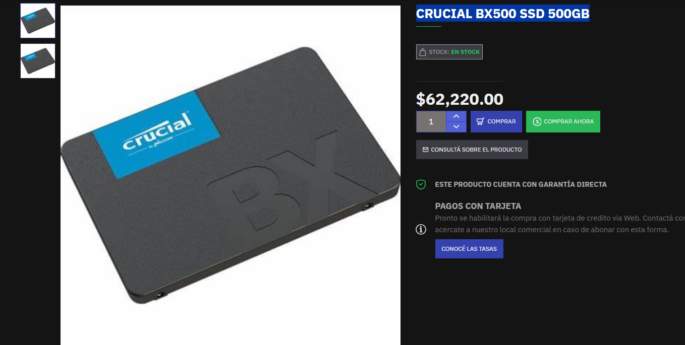
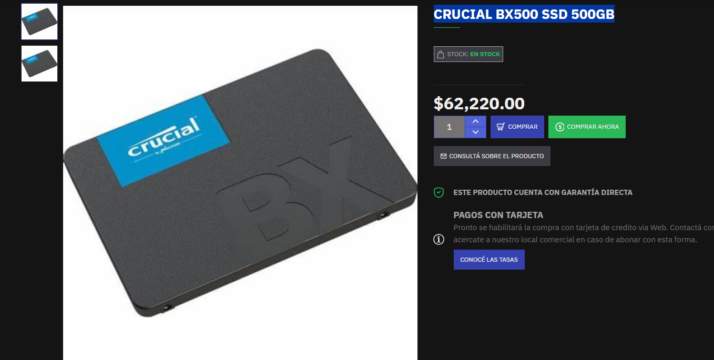

Parte de Santos:
Según la inteligencia artificial Copilot, esta fue la PC recomendada:

Y estos son los periféricos recomendados, según esta misma IA:
Según la inteligencia artificial Chat gpt, esta fue la PC recomendada:

Por lo tanto, según mi criterio, esta fue la pc que elegí, de forma que se adapte a mi presupuesto:

El presupuesto lo saque de las siguientes páginas: https://ecommerce.paranahardware.com.ar, y https://fullh4rd.com.ar/
Esta pagina corresponde a una casa de computacion de Paraná.
El presupuesto total de la pc es de $1.039.760, o 707,80 dolares a precio del 17/9/2025.
El precio de cada componente es el siguiente:
VIDEO GeForce RTX 3050 8GB MSI VENTUS 2X XS OC: $402.800
AMD Ryzen 5 5500: $161.290
FuenteAdata XPG Probe 600W 80+Bronze: $91.620
CRUCIAL BX500 SSD 500GB: $62.220
Asus Prime B550M-K: $153.880
HIKSEMI ARMOR 8GB DDR4 3200MHz (x2): $43.340 cada una
Gabinete Sentey M40 ARGB: $79.760
A continuación, adjunto los precios sacados de la página:


 

EXPLICACION DE CADA ELECCION:
Placa de video: Elegí la RTX 3050 porque es una placa de gama media que me permite jugar a 1080p con buenos gráficos en la mayoría de los juegos actuales. Además, tiene soporte para tecnologías como Ray Tracing y DLSS, lo que mejora la calidad visual y el rendimiento.
Procesador: El AMD Ryzen 5 5500 permite ejecutar el juego y el software de streaming (como OBS) al mismo tiempo sin saturar el procesador.. Tiene 6 núcleos y 12 hilos, lo que proporciona un buen equilibrio entre rendimiento y precio. Es compatible con la mayoría de las placas madre B550, lo que facilita futuras actualizaciones.
Ram: Buena relación calidad precio, además de que se complementa muy bien con la placa de video y el procesador. Permite jugar sin tirones ni saturación de memoria. También incluye disipador de calor.
Almacenamiento: Este ssd es sufuciente para instalar el sistema operativo, un editor de video, el juego, y guardar los clips de mis streams. Además es de los más baratos del mercado, por lo que pude abaratar costos.
Placa madre: La Asus Prime B550M-K es una placa madre durable y con buena compatibilidad, además de que es bastante accesible. Está diseñada para aprovechar al máximo procesadores como el ryzen 5 5600, e incluye estabilidad, refrigeración y buen rendimiento en general.
Fuente: La Adata XPG Probe 600W 80+Bronze es una fuente de alimentación confiable y eficiente, con certificación 80 Plus Bronze que garantiza un buen rendimiento energético. Con 600W de potencia, es suficiente para alimentar todos los componentes de la PC y permite futuras actualizaciones sin problemas.
Gabinete: El Sentey M40 ARGB es un gabinete económico pero funcional, con buen flujo de aire y espacio suficiente para los componentes elegidos.
PERIFERICOS ELEGIDOS:
Lista de precios:
Monitor Hikvision DS-D5027F2 VGA/HDMI 100Hz: $215.870
Sentey GS-5850 Combo Gaming, incluye mouse, auriculares y teclado: $49.000
WEBCAM LOGITECH C920S HD PRO 960-001257: $138.839
Total periféricos: $402.000
A continuación, adjunto los precios sacados de la página:

Explicación de cada elección:
Monitor: Elegí este monitor porque tiene una buena resolución (1920x1080) y una tasa de refresco de 100Hz, lo que mejora la experiencia de juego y reduce el desenfoque de movimiento. Además, tiene entradas VGA y HDMI, lo que permite conectarlo a diferentes dispositivos.
Combo de teclado, mouse y auriculares: Este combo es una opción muy buena para abaratar costos.
Webcam: La Logitech C920S HD Pro es una webcam de alta calidad que ofrece una resolución Full HD (1080p) y un enfoque automático rápido. Es ideal para transmisiones en vivo ya que proporciona una imagen clara y nítida.
SISTEMA OPERATIVO:
Elegí comprar una licencia Microsoft Windows 11 Pro Key retail, ya que se adaptaba bien a mi presupuesto, además de que me gusta la interfaz y comodidad de este so.
El precio de esta licencia es de $11.999.

En total, el presupuesto de la pc más los periféricos y el sistema operativo es de $1.453.759, o 988,79 dolares a precio del 17/9/2025.
El presupuesto total se adapta a mi presupuesto inicial, que era de 1000 dolares, y permite tener una PC para jugar y strimear el FC26 en buena calidad y con un buen rendimiento.
La opinion de la ia copilot sobre mi pc fue la siguiente: